Effective permeability of media with a dense network of long and micro fractures
![]()
This paper presents a new methodology to estimate the effective permeability of random fractured media of any anisotropy containing both micro-fractures and a large number of long fractures cross-cutting the representative volume element. The fractures are replaced by fictitious permeable materials for which the tangential permeability is deduced from a Poiseuille flow. A self-consistent scheme is proposed to derive the macroscopic permeability. On the one hand, the contribution of long fractures to the effective permeability writes by simple superposition of the fracture tangential permeabilities. On the other hand, the contribution of micro-fractures needs to resort to auxiliary problems requiring the computation of second-order Hill (or Eshelby) tensors related to ellipsoids embedded in an anisotropic matrix, for which a complete procedure is detailed. The effect of the micro-fracture normal permeability is put in evidence in the upscaling scheme and analyzed. In particular, it is shown that it must be chosen large enough to allow the connections between families. Examples are finally developed and compared to numerical simulations in the 2D case.
anisotropic effective permeability, self-consistent scheme, fracture permeability, double scale fracture network
Author-accepted manuscript (postprint). This is the accepted version of an article published by Springer in Transport in Porous Media. The version of record is available at doi:10.1007/s11242-008-9241-9. Please cite as: J.-F. Barthélémy, “Effective permeability of media with a dense network of long and micro fractures”, Transport in Porous Media 76(1) (2008) 153–178. © Springer Science+Business Media B.V. 2008.
This author-accepted manuscript is made available under the Creative Commons Attribution-NonCommercial-NoDerivatives 4.0 International (CC BY-NC-ND 4.0) license. 
Nomenclature
| Symbol | Meaning |
|---|---|
| \(\uv{X}\) | vector notation |
| \(\uu{X}\) | second-order tensor notation |
| \(p\) | pressure field |
| \(\uv{\nabla}P\) | macroscopic pressure gradient |
| \(\uv{q}\) | microscopic filtration vector |
| \(\uv{Q}\) | macroscopic filtration vector |
| \(\mu\) | fluid viscosity |
| \(\idd\) | second-order identity tensor |
| \(\idd_{\n}\) | orthogonal projector on the plane of normal \(\n\) (\(\idd_{\n}=\idd-\n\otimes\n\)) |
| \(\uu{K}^s\) | permeability of the solid phase |
| \(\uu{K}^i\) | permeability of a fracture of the \(i^{\mathrm{th}}\) family |
| \(K_t\) | tangential permeability of the fracture |
| \(K_n\) | normal permeability of the fracture |
| \(\uu{K}^{hom}\) | macroscopic permeability |
| \(\uu{K}^o\) | permeability of the reference medium |
| \(G^o\) | Green function for the reference permeability \(\uu{K}^o\) |
| \(\uu{P}_o^{\mathcal{I}}\) | Hill polarization tensor for an ellipsoidal inclusion \(\mathcal{I}\) in the reference medium |
| \(\hessx{\x}{}\) | hessian operator with respect to the position \(\uv{x}\) (\(\hessx{\x}{}\equiv\graddx{\x}{\;\gradux{\x}{}}\)) |
Introduction
A lot of industrial applications, e.g. hydrocarbon production, water supply or subcritical \(CO_2\) storage, are concerned by fluid flows in rocks. The issue of modeling such flows, for example at the scale of a reservoir for the assessment of field productivity and reserves, requires to focus on the porous domain and more specifically on the fracture network. Indeed the latter can be composed of several geological entities of different orders of length magnitude which can all play a very important role in the overall hydraulic behavior of the field. In addition to the pores and fractures at very small scale (decimetric or less) accounting for the intrinsic porosity and permeability of the rock matrix, several fracturation scales are put in evidence in (Bourbiaux et al. 2002). On the one hand, large scale faults observable by seismic surveys, sub-seismic faults and fracture swarms consisting in clusters of fractures can all be considered as large scale fractures (hectometric or more) taken explicitely into account in flow simulation models. On the other hand, diffuse fractures (metric to decametric) are so numerous that they can not reasonably individually appear in those models; however, their presence may significantly affect the fluid flows. A workflow incorporating the hydraulic effects of fractures at all scales and their possible interactions is detailed in (Bourbiaux et al. 2002) so as to build a complete flow simulation model. An example of model built and calibrated from available static and dynamic data and containing fractures at different scales can be found in (Galard et al. 2005). Many real case studies show that, as expected, the presence of large scale fractures of high transmissivity has a strong impact on the field behavior and particularly on well production data, especially when they cross the well ((Cosentino et al. 2001), (Jenni et al. 2007)). Nevertheless, as emphasized in (Cosentino et al. 2001), the requested accuracy of the simulation used for prediction imposes to build a dual medium model accounting for the interactions between the large draining faults and their neighborhood, namely media of lower permeability but with a high fluid storage capacity as diffuse fracture networks or even the matrix itself. For this purpose, the intrinsic porosity and permeability of the matrix can sometimes be deduced from fracture observations at the core scale (centimetric) as in (Howard and Nolen-Hoeksema 1990) or from inversion methods based on flowmeter data as in (Cosentino et al. 2001). For some reservoirs, dynamic data can be successfully numerically reproduced by a model involving only a permeable matrix and networks of diffuse (metric to decametric) fractures but no large fault (Verga et al. 2001). The combined influence of diffuse fractures and a permeable matrix suggests resorting to techniques allowing to derive effective properties of dual porosity/permeability media (Bourbiaux et al. 1998). In many papers proposing workflows for flow simulation ((Bourbiaux et al. 1998), (Sabathier et al. 1998), (Cacas et al. 2001), (Garcia et al. 2007)) or presenting real cases ((Cosentino et al. 2001), (Galard et al. 2005)), an important step consists in representing the hydraulic effect of diffuse fractures by an effective permeability. In some cases, the proposed upscaling method relies on a numerical resolution on an explicit local discrete fracture network ((Sabathier et al. 1998), (Pouya 2005)). Besides, the issue of upscaling hydraulic properties of fracture networks by analytical methods has also been raised by several authors: (Oda 1986) presents a method based on a linear superposition of the contributions of different fracture families, (Zimmerman 1996) implements the differential scheme and Maxwell’s method for \(2D\) isotropic fracture networks, (Fokker 2001) and (Dormieux and Kondo 2004) take advantage of the self-consistent scheme for, respectively, \(2D\) anisotropic networks and \(3D\) isotropic networks. This paper deals with the estimate of the permeability of a fractured medium with a \(3D\) anisotropic fracture network. As the existence of a r.v.e. (representative volume element) is assumed in the sequel, it becomes natural to define the macroscopic scale as that considering the r.v.e. as an elementary particle with effective properties and the microscopic scale as that refering to the different phases composing the r.v.e. (fracture families and solid phase). The diffuse fracture network considered here contains a high density of families of micro-fractures and long fractures with small spacing. The adjective long characterizes fractures cross-cutting the r.v.e.. The fracture centers are randomly distributed and the orientations of the families are arbitrary, leading then to a possible anisotropic effective permeability. The notion of r.v.e. implies the separation scale between its characteristic length and those of the fracture families, namely the size of micro-fractures or the average spacing between long fractures cross-cutting the r.v.e.. It should be recalled that the prefix micro only refers to a small size compared to that of the r.v.e., whatever the order of magnitude of the latter (decimetric to hectometric according to real case studies (Sabathier et al. 1998)). The framework of random media upscaling, which is also commonly used to estimate mechanical effective properties (Zaoui 2002), is considered here so as to provide a methodology based on the self-consistent scheme to estimate the effective permeability \(\uu{K}^{hom}\) in the general case of a \(3D\) anisotropic distribution of fractures. The contribution of micro-fractures, requiring the determination of anisotropic Hill polarization tensors, extends to \(3D\) the results obtained in \(2D\) in (Fokker 2001). The self-consistent scheme allows to highlight percolation thresholds in the case of a strong contrast between the phases (fracture space and matrix). Considering fractures as fictitious Darcean materials, i.e. characterized by a permeability tensor, the paper focuses on the relevance of the different components of this tensor. In particular, the influence of the normal component on the macroscopic permeability is analyzed in details for both fracture types and illustrated by (\(3D\) or \(2D\)) isotropic distributions of fractures allowing to derive closed-form solutions of \(\uu{K}^{hom}\). In the general case of an anisotropic distribution, numerical solutions of the self-consistent scheme can be obtained and compared to calculations made on explicit discrete fracture networks.
1 Description of the phases
1.1 Description of the fracture network
In natural diffuse fractured media as reservoirs, the issue of the existence of a r.v.e. on which upscaling techniques can provide macroscopic properties such as permeability and percolation thresholds has sometimes to be reconsidered. This is for example the case for fracture networks with a fractal correlation ((Bonnet et al. 2001), (Darcel et al. 2003), (Darcel 2002)). Nevertheless, aiming at applying upscaling methods, the media which are studied in the present paper are based on the assumption of a random fracture distribution. In this case, some papers ((Dreuzy et al. 2001a), (Dreuzy et al. 2001b)) have shown the influence of the geometrical parameters of the fractures, in particular the length distribution, on the connectivity and the permeability of the medium. A domain of validity of the effective medium theory based on the self-consistent scheme that will be developed hereafter is provided in (Dreuzy et al. 2001a). According to the latter, this technique can only be applied for a connectivity beyond the percolation threshold whereas other theories or numerical devices depending on the length distribution should be applied before and at the threshold. Nevertheless, the latter as well as the permeability tensor can be rather well estimated by the self-consistent scheme ((Fokker 2001), (Pozdniakov and Tsang 2004)) except in the very neighborhood of the threshold (Sahimi 1995) which appears as a transition at which the permeability progressively changes of order of magnitude. It is worth mentioning that a percolation threshold can also be obtained by means of Maxwell’s method for a \(2D\) isotropic network in (Zimmerman 1996). Although thresholds derived by such effective media theories do not exactly coincide with numerical simulations, those theories can anyway provide rough but quick estimates which can be refined by numerical computations on effective fracture networks or which can also be used to assess the sensitivity to the fracture network characteristics. The present study relies on the assumption of existence of a r.v.e. with \(N\) fracture families. The \(i^{\mathrm{th}}\) family (\(1\leq i\leq N\)) contains a large number of fractures all characterized by the same length, aspect ratio, orientation and hydraulic properties. It must be emphasized here that the following developments are based on a finite number of families. This means that the characteristics (length, shape, orientation or conductivity) must take discrete values. Nevertheless, continuous distributions of the latter (defined for example by means of probability density functions) could be accounted for by building an equivalent discrete set of families. For example, in the framework of mechanics, (Zhu 2006) presents methods either based on numerical integration by gaussian quadrature or on the definition of a representative set of families allowing to replace a continuous orientation distribution by a discrete one. The set of \(N\) fracture families is partitioned in two subsets: families of long fractures cross-cutting the r.v.e. (\(i\in{\mathcal{C}}\)) and families of micro-fractures (\(i\in{\mathcal{M}}\)).
Families of fractures cross-cutting the r.v.e. (\(i\in{\mathcal{C}}\)) A fracture cross-cutting the r.v.e. is geometrically described here as a plane, assuming then that its curvature can be neglected at the scale of the r.v.e.. The average spacing between fractures of the \(i^{\mathrm{th}}\) family is denoted by \(d_i\). This distance can be considered as the characteristic dimension of the family and must be very small compared to the size of the fractures and to that of the r.v.e. (Fig. 1). The orientation is entirely defined by a normal vector i.e. two Euler angles. Adopting a \(3D\) description of the fracture, the latter can be seen as a volume delimited by two parallel planes. Introducing the average geometrical aperture \(h_i\), possibly different from the hydraulical aperture defined later, the infinitesimal volume fraction of the family is:
\[ \wideeq{f_i=\frac{h_i}{d_i}} \tag{1}\]
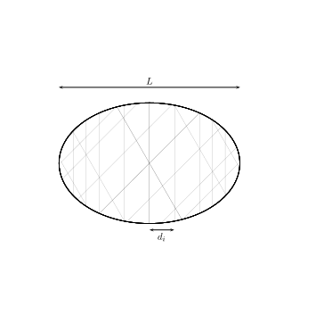
Families of micro-fractures (\(i\in{\mathcal{M}}\)) Considering fractures as \(2D\) plane objects, the micro-fractures are modeled as ellipses and the characteristic length of each family (largest radius \(a_i\)) is assumed to be very small compared to the characteristic dimension of the r.v.e.. The aspect ratio characterizing the shape in the fracture plane is denoted by \(\eta_i=b_i/a_i\) where \(b_i\) is the small radius. If \({\mathcal{N}}_i\) denotes the number of fractures per volume unit and \(\epsilon_i={\mathcal{N}}_i a_i^3\) the classical density introduced by Budiansky (Budiansky and O’Connell 1976), the average spacing between two elements of a family is then the inverse of the average number of fractures intersecting a segment of unit length orthogonal to the fracture plane:
\[ \wideeq{d_i=\frac{1}{{\mathcal{N}}_i\,\pi\,a_i^2\,\eta_i}= \frac{a_i}{\pi\,\epsilon_i\,\eta_i}} \tag{2}\]
The orientation of all the micro-fractures of a given family is defined by a \(3D\) frame (three orthonormal vectors) i.e. three Euler angles as described later in Fig. 7. A network composed of three families of micro-fractures is shown on Fig. 2. For sake of convenience in the self-consistent scheme based on Eshelby’s problem and developed in the following, we also introduce a \(3D\) model of micro-fractures considered as ellipsoids of largest radii \(a_i\) and \(b_i\). The third dimension is then defined by the small radius \(c_i\) or the ratio \(\omega_i=c_i/a_i\ll 1\) (see Fig. 3). Hence, the volume fraction of the micro-fracture family writes:
\[ \wideeq{f_i=\frac{4}{3}\,\pi\,\epsilon_i\,\eta_i\,\omega_i} \tag{3}\]
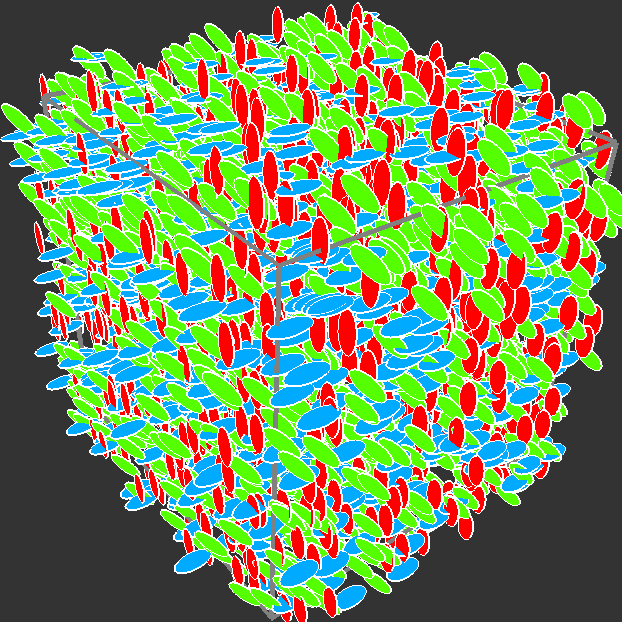
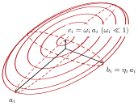
It is assumed that all the characteristic lengths of the families (spacing in the case of fractures cross-cutting the r.v.e. and size in the case of micro-fractures) are of the same order of magnitude, i.e. infinitesimal with respect to the dimension of the r.v.e., in order to incorporate all the families to the same upscaling process. Otherwise several successive steps have to be performed.
1.2 Hydraulic properties of the phases
Ene and Sanchez-Palencia have shown, in the framework of periodic homogenization, that the steady-state, laminar, single-phase and incompressible flow of a newtonian viscous fluid in a porous medium obeys to the Darcy law at the upper scale, which means that the filtration velocity is linearly related to the pressure gradient (Ene and Sanchez-Palencia 1975):
\[ \wideeq{\uv{Q}=-\frac{\uu{K}^{hom}}{\mu}\prodc\uv{\nabla} P} \tag{4}\]
where the second-order tensor \(\uu{K}^{hom}\) has the dimension of a surface (\(m^2\)) and depends on the sole morphology of the porous space (i.e. not on the fluid viscosity \(\mu\)). The aim of the upscaling procedure is to determine or at least estimate \(\uu{K}^{hom}\). It is commonly assumed that the relationship (4) also applies to random media but estimating \(\uu{K}^{hom}\) from Stokes equations at the lower scale proves to be a hard task. That is why some authors ((Fokker 2001), (Dormieux and Kondo 2004), (Pozdniakov and Tsang 2004)) have proposed to replace the different constituents of the microscopic scale (fractures and solid phase) by fictitious Darcy media. The advantage of such a method is that the same type of equation, namely the Darcy law, applies at both the microscopic and macroscopic scale. The permeability of the solid phase is assumed to be isotropic \(\uu{K}^s=K^s\idd\). This permeability results from the presence of micropores at a lower scale and is possibly obtained by a previous upscaling procedure. The permeability of the fractures writes with tangential and normal permeabilities which are a priori different:
\[ \wideeq{\uu{K}^i=\uu{K}_t^i+K_n^i\,\n_i\otimes\n_i \quad\textrm{with } \uu{K}_t^i=K_t^i\,\idd_{\n_i} =K_t^i\,\dep{\idd-\n_i\otimes\n_i}} \tag{5}\]
Following a classical result of rock hydraulics (Guéguen and Palciauskas 1994), \(K_t^i\) accounts for the overall tangential permeability of the fracture and is identified with the ratio between the average velocity of a Poiseuille flow between two idealized planes and the pressure gradient in the direction of the planes. The space \(e_i\) between those fictitious planes is called the hydraulic aperture. It may differ from its geometrical counterpart because the latter may not be uniform along the fracture due to the face rugosity or simply due to the specific \(3D\) geometry, for instance in the case of an ellipsoid. The equivalent Poiseuille flow then gives:
\[ \wideeq{K_t^i=\frac{e_i^2}{12}} \tag{6}\]
It is assumed in the following that the tangential permeability \(K_t^i\) is much larger than \(K^s\) implying the impermeability of the fracture faces. As the equivalent Poiseuille problem is based on a flow parallel to the fracture plane, it does not give any indication on how to estimate \(K_n^i\). Recalling that a permeability is the macroscopic evidence of charge loss due to friction at the fluid-solid interface at the microscopic scale, the intuition could lead us to choose a value of \(K_n^i\) much larger than \(K_t^i\) because the latter should be much more impacted by the narrowness of the fracture aperture (6) than the former. Nevertheless, some authors have proposed different other choices: for example, the micro-fracture permeability is taken isotropic (\(K_n^i=K_t^i\)) in (Fokker 2001) or \(K_n^i=K^s\ll K_t^i\) in (Dormieux and Kondo 2004). Thus, replacing the real fluid flow in the fracture space by an effective flow in a fictitious Darcy medium somehow makes \(K_n^i\) in (5) a mathematical parameter which does not seem so obvious to choose. It is then necessary to raise the issue of the relevance of any choice of \(K_n^i\) by analyzing its impact on the overall permeability, which is the purpose of section 3.
2 Determination of the macroscopic permeability
The upscaling problem to solve on the r.v.e. \(\Omega\) is similar to that allowing to exhibit effective thermal or electrical properties i.e. is the following elliptic problem:
\[ \left\{ \begin{array}{lll} \Div{\uv{q}}=0& (\Omega)& (a)\\[5pt] \uv{q}=-\frac{K^s}{\mu}\,\gradu{p}& (\Omega^s)& (b)\\[5pt] \uv{q}=-\frac{\uu{K}^i}{\mu}\prodc\gradu{p}& (\Omega^i)& (c)\\[5pt] p=\uv{\nabla} P\prodc\x& (\frontiere{\Omega})& (d) \end{array} \right. \tag{7}\]
where \(\Omega^s\) is the space occupied by the matrix, \(\Omega^i\) the space occupied by the \(i^{\mathrm{th}}\) fracture family and \(\uv{\nabla} P\) is a given uniform vector identified as the macroscopic pressure gradient. The linearity of the equations at stake implies the existence of a concentration tensor field such that the solution of (7) writes:
\[ \wideeq{\forall\x\in\Omega,\quad \gradu{p}\depx=\uu{A}\depx\prodc\uv{\nabla} P} \tag{8}\]
The macroscopic permeability is then given by:
\[ \begin{array}{c} \uv{Q}=\moydom{\uv{q}}{\Omega}= -\frac{\uu{K}^{hom}}{\mu}\prodc\uv{\nabla} P\\[5pt] \textrm{ with }\; \uu{K}^{hom}=\moydom{\uu{K}\prodc\uu{A}}{\Omega} =\dep{1-\sum_{i=1}^Nf_i}\uu{K}^s\prodc\moydom{\uu{A}}{\Os} +\sum_{i=1}^Nf_i\,\uu{K}^i\prodc\moydom{\uu{A}}{\Oi} \end{array} \tag{9}\]
where \(\moydom{\cdot}{\omega}\) denotes the average operator over the domain \({\omega}\). The upscaling methods aim at providing estimates of the averages of the concentration tensor or equivalently the relationships between the averages of \(\uv{q}\) in each phase and \(\uv{\nabla} P\).
2.1 Contribution of the fractures cross-cutting the r.v.e.
As they cross-cut the r.v.e., those fractures are subjected to a pressure difference directly related to the boundary condition (7 d). In fact, as pointed out in (Oda 1986), the fluid flow in those fractures sees an effective pressure gradient obtained by projection of the macroscopic pressure gradient onto the fracture plane. By construction of \(K_t^i\) and recalling that the fracture faces are impermeable, the flow in such a family is purely tangential and writes:
\[ \wideeq{\moydom{\uv{q}}{\Oi} =-\frac{K_t^i}{\mu}\,\idd_{\n_i}\,\prodc\uv{\nabla} P =-\frac{\uu{K}_t^i}{\mu}\prodc\uv{\nabla} P \qquad(\forall i\in{\mathcal{C}})} \tag{10}\]
The contribution of this family to \(\uu{K}^{hom}\) (9) can then be identified in (10) by:
\[ \wideeq{\uu{K}^i\prodc\moydom{\uu{A}}{\Oi}= \uu{K}_t^i=K_t^i\,\idd_{\n_i} \qquad(\forall i\in{\mathcal{C}})} \tag{11}\]
which appears as a superposed term in (9) without any interaction with other fracture families. \(K_n^i\) is obviously not involved in the explicit contribution of the corresponding family to \(\uu{K}^{hom}\) (11). Focusing on the estimate of the pressure gradient average i.e. \(\moydom{\uu{A}}{\Oi}\), it can first be noted that (11) leads to
\[ \wideeq{\idd_{\n_i}\prodc\moydom{\uu{A}}{\Oi}= \idd_{\n_i} \quad\textrm{and}\quad \norm{K_n^i\,\n_i\otimes\n_i\prodc\moydom{\uu{A}}{\Oi}}\ll K_t^i \qquad(\forall i\in{\mathcal{C}})} \tag{12}\]
The first relationship of (12) allows to determine without ambiguity the projection \(\moydom{\uu{A}}{\Oi}\) onto the fracture plane whereas the projection onto the normal depends on the choice of \(K_n^i\). If \(K_n^i\) is chosen at least of the same order of magnitude as \(K_t^i\), then (12) implies that
\[ \wideeq{\moydom{\uu{A}}{\Oi}=\idd_{\n_i} \qquad(\forall i\in{\mathcal{C}})} \tag{13}\]
The choice \(K_n^i\ll K_t^i\) still satisfies the consistency with (11) but leads to three undetermined components of \(\moydom{\uu{A}}{\Oi}\). In fact, the following developments in sections 2.2 and 2.4 will show that those components of \(\moydom{\uu{A}}{\Oi}\) do not actually play a role in the upscaling process provided that they keep bounded values. (13) can therefore still be used.
2.2 Contribution of the micro-fractures
Unlike the previous case of fractures cross-cutting the r.v.e., the interactions of smaller fractures with their neighborhood must be strong. Their influence on the overall permeability comes from the connections between them, which means that each phase of the heterogeneous medium is in contact with elements of the other phases. According to (Dormieux and Kondo 2004), the self-consistent scheme is adapted for its capacity to account for a disordered microstructure and to exhibit percolation thresholds. In the framework of the self-consistent scheme, the average of the concentration tensor in each phase is estimated by means of an auxiliary problem of an ellipsoid \(\mathcal{I}\) embedded in the infinite effective medium itself and subjected to a remote pressure gradient \(\uv{\nabla}P^o\). The use of \(\uv{\nabla}P^o\) different from \(\uv{\nabla}P\) corresponds to a classical way to take into account interactions in upscaling schemes (see for example (Zaoui 2002) in the mechanical framework). The relationship between \(\uv{\nabla}P^o\) and \(\uv{\nabla}P\) is obtained by means of the consistency rule:
\[ \wideeq{\moydom{\gradu{p}}{\Omega}=\uv{\nabla}P} \tag{14}\]
The auxiliary problem, known as the Eshelby problem (Eshelby 1957), shows an homogeneous pressure gradient within the ellipsoid, which is used as an estimate of the pressure gradient average in the fractures of the \(i^{th}\) family in the r.v.e. problem:
\[ \wideeq{\moydom{\gradu{p}}{\Oi}= \uu{\Lambda}_i \prodc\uv{\nabla}P^o \quad\textrm{with } \uu{\Lambda}_i=\inv{\dep{\idd+\uu{P}_{hom}^i \prodc\dep{\uu{K}^i-\uu{K}^{hom}}}} \qquad(\forall i\in{\mathcal{M}})} \tag{15}\]
where the second-order Hill tensor \(\uu{P}_{hom}^i\) depends on \(\uu{K}^{hom}\) and on the shape and orientation of the ellipsoid. The ellipsoid representing the \(i^{th}\) family is defined thanks to a second-order tensor \(\uu{H}_i\) by the equation:
\[ \wideeq{\x\prodc\inv{\dep{\trans{\uu{H}_i}\prodc\uu{H}_i}}\prodc\x\leq 1} \tag{16}\]
For any ellipsoid, \(\uu{P}_{hom}^i\) results from \(\uu{K}^{hom}\) in the general 3D anisotropic case according to the following procedure (see 5 for a detailed proof):
Diagonalize \(\uu{K}^{hom}\) and introduce the tensor \(\uu{R}\) such that
\[ \wideeq{\trans{\uu{Q}}\prodc\uu{Q}=\idd \quad\textrm{and}\quad \trans{\uu{Q}}\prodc\uu{K}^{hom}\prodc\uu{Q}= \sum_{j=1}^3 K^{hom}_{j}\,\ve{j}\otimes\ve{j}} \tag{17}\]
\[ \wideeq{\uu{R}=\sum_{j=1}^3 \sqrt{K^{hom}_{j}}\,\uu{Q}\prodc\ve{j}\otimes\ve{j}} \tag{18}\]
Compute the tensor \(\uu{H}'_i=\uu{H}_i\prodc\trans{\inv{\uu{R}}}\) and diagonalize \(\trans{\uu{H}'_i}\prodc\uu{H}'_i\)
\[ \wideeq{\trans{\uu{S}}_i\prodc\uu{S}_i=\idd \quad\textrm{and}\quad \trans{\uu{S}}_i\prodc\trans{\uu{H}'_i}\prodc\uu{H}'_i\prodc\uu{S}_i= A^2_i\,\ve{1}\otimes\ve{1}+ B^2_i\,\ve{2}\otimes\ve{2}+ C^2_i\,\ve{3}\otimes\ve{3}} \tag{19}\]
with \(A_i\geq B_i\geq C_i\)1
Compute the tensor
\[ \wideeq{\uu{\Delta}_i=I_A^i\,\ve{1}\otimes\ve{1}+ I_B^i\,\ve{2}\otimes\ve{2}+ I_C^i\,\ve{3}\otimes\ve{3}} \tag{20}\]
with
[\(\bullet\)] if \(A_i>B_i>C_i\)
\[ \wideeq{I_A^i=\frac{A_i\,B_i\,C_i}{\dep{A_i^2-B_i^2}\,\sqrt{A_i^2-C_i^2}}\,\dep{{\mathcal{F}}_i-{\mathcal{E}}_i}} \tag{21}\]
\[ \wideeq{I_C^i=\frac{A_i\,B_i\,C_i}{\dep{B_i^2-C_i^2}\,\sqrt{A_i^2-C_i^2}}\, \dep{\frac{B_i\,\sqrt{A_i^2-C_i^2}}{A_i\,C_i}-{\mathcal{E}}_i}} \tag{22}\]
\[ \wideeq{I_B^i=1-I_A^i-I_C^i} \tag{23}\]
where \({\mathcal{F}}_i={\mathcal{F}}(\theta_i,k_i)\) and \({\mathcal{E}}_i={\mathcal{E}}(\theta_i,k_i)\) are respectively the elliptic integrals of the first and second kinds of amplitude and parameter:
\[ \wideeq{\theta_i=\arcsin{\sqrt{1-\frac{C_i^2}{A_i^2}}} \quad;\quad k_i=\sqrt{\frac{A_i^2-B_i^2}{A_i^2-C_i^2}}} \tag{24}\]
[\(\bullet\)] if \(A_i>B_i=C_i\)
\[ \wideeq{I_B^i=I_C^i=\frac{1}{2}\,A_i\, \frac{A_i\,\sqrt{A_i^2-C_i^2}-C_i^2\,\argch{\dep{A_i/C_i}}} {\dep{A_i^2-C_i^2}^{3/2}}} \tag{25}\]
\[ \wideeq{I_A^i=1-2\,I_B^i} \tag{26}\]
[\(\bullet\)] if \(A_i=B_i>C_i\)
\[ \wideeq{I_A^i=I_B^i=\frac{1}{2}\,C_i\, \frac{A_i^2\,\arccos{\dep{C_i/A_i}}-C_i\,\sqrt{A_i^2-C_i^2}} {\dep{A_i^2-C_i^2}^{3/2}}} \tag{27}\]
\[ \wideeq{I_C^i=1-2\,I_A^i} \tag{28}\]
[\(\bullet\)] if \(A_i=B_i=C_i\)
\[ \wideeq{I_A^i=I_B^i=I_C^i=\frac{1}{3}} \tag{29}\]
Finally compute
\[ \wideeq{\uu{P}_{hom}^i= \trans{\inv{\uu{R}}}\prodc \uu{S}_i\prodc\uu{\Delta}_i\prodc\trans{\uu{S}}_i \prodc\inv{\uu{R}}} \tag{30}\]
The determination of the average of the concentration tensor \(\moydom{\uu{A}}{\Oi}\) will be achieved when the relationship between \(\uv{\nabla}P^o\) and \(\uv{\nabla}P\) is found. However, as this relationship comes from the consistency rule (14), the average of the pressure gradient within the matrix must also be estimated through an auxiliary problem even if the explicit contribution of the matrix in (9) could be neglected because of the low permeability of the matrix.
2.3 Contribution of the matrix
In the self-consistent scheme, the matrix phase also requires the resolution of an auxiliary problem to estimate the average of the pressure gradient. Nevertheless, unlike polycrystals in which each phase plays an equivalent role, the matrix here plays a specific role from the geometrical point of view. The latter, which occupies almost all the r.v.e. space, is also represented by an ellipsoid in its auxiliary problem but the shape of the ellipsoid may not be as obvious as for the polycrystals. This ellipsoid is supposed to account for the spatial distribution of the matrix with respect to the fractures crossing it. More precisely, it seems judicious to quantify the anisotropy of the inter-fracture space by means of the family orientations \(\n_i\) and spacings \(d_i\) as shown on Fig. 4 and build the \(\uu{H}^s\) tensor related to the matrix ellipsoid according to the definition:
\[ \wideeq{\uu{H}^s=\inv{\dep{\sum_{i=1}^N\frac{1}{d_i}\,\n_i\otimes\n_i}}} \tag{31}\]
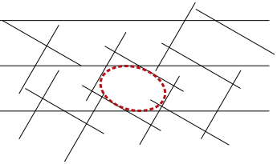
Knowing the shape of the ellipsoid, the average of the pressure gradient within the matrix can then be estimated by means of the same procedure as for the micro-fractures i.e.:
\[ \wideeq{\moydom{\gradu{p}}{\Os}= \uu{\Lambda}_s \prodc\uv{\nabla}P^o \quad\textrm{with } \uu{\Lambda}_s=\inv{\dep{\idd+\uu{P}_{hom}^s \prodc\dep{\uu{K}^s-\uu{K}^{hom}}}}} \tag{32}\]
where \(\uu{P}_{hom}^s\) depends on \(\uu{K}^{hom}\) and \(\uu{H}^s\) (31).
2.4 Macroscopic permeability
Using the estimates (15) and (32) in the consistency rule (14) provides the relationship between the auxiliary pressure gradient \(\uv{\nabla}P^o\) and the actual one \(\uv{\nabla}P\):
\[ \wideeq{\uv{\nabla}P^o= \inv{\depc{\Big(1-\sum_{i=1}^N f_i\Big)\uu{\Lambda}_s +\sum_{i\in{\mathcal{M}}}f_i\,\uu{\Lambda}_i }} \prodc \Big({\idd-\sum_{i\in{\mathcal{C}}}f_i\,\moydom{\uu{A}}{\Oi}}\Big)\, \prodc\uv{\nabla}P} \tag{33}\]
Since the fracture volume fractions are infinitesimal, the average pressure gradients i.e. \(\moydom{\uu{A}}{\Oi}\) of the families of long fractures play a role in (33) only if it presents singular values. If \(\moydom{\uu{A}}{\Oi}\) is bounded as in (13), (33) gives:
\[ \wideeq{\uv{\nabla}P^o= \inv{\dep{\uu{\Lambda}_s +\sum_{i\in{\mathcal{M}}}f_i\,\uu{\Lambda}_i }} \prodc\uv{\nabla}P} \tag{34}\]
A singular component of \(\moydom{\uu{A}}{\Oi}\), along \(\n_i\otimes\n_i\) to remain consistent with (12), would have implied a reduction of the level of \(\uv{\nabla}P^o\) and consequently of \(\uu{K}^{hom}\), which would have made the corresponding long fracture family play the unexpected role of a barrier against the fluid flow possibly coming from micro-fracture families. Finally, the average of the concentration tensor in the micro-fracture families (resp. in the matrix) can be written with the help of (15) (resp. (32)) and (34):
\[ \wideeq{\moydom{\uu{A}}{\Oi}= \uu{\Lambda}_i\prodc\inv{\dep{\uu{\Lambda}_s +\sum_{i\in{\mathcal{M}}}f_i\,\uu{\Lambda}_i }} \qquad(\forall i\in{\mathcal{M}})} \tag{35}\]
\[ \wideeq{\moydom{\uu{A}}{\Os}= \uu{\Lambda}_s\prodc\inv{\dep{\uu{\Lambda}_s +\sum_{i\in{\mathcal{M}}}f_i\,\uu{\Lambda}_i }}} \tag{36}\]
The macroscopic permeability \(\uu{K}^{hom}\) can now be estimated by taking advantage of (10), (35) and (36) in (9):
\[ \wideeq{\uu{K}^{hom} =\dep{ \Big(1-\sum_{i=1}^N f_i\Big)\uu{K}^s\prodc\uu{\Lambda}_s +\sum_{i\in{\mathcal{M}}}f_i\,\uu{K}^i\prodc\uu{\Lambda}_i }\prodc\inv{\dep{\uu{\Lambda}_s +\sum_{i\in{\mathcal{M}}}f_i\,\uu{\Lambda}_i }} +\sum_{i\in{\mathcal{C}}}f_i\,\uu{K}_t^i} \tag{37}\]
It is recalled that, in the framework of the self-consistent scheme, the tensors \(\uu{\Lambda}_i\) (15) and \(\uu{\Lambda}_s\) (32) nonlinearly depend on \(\uu{K}^{hom}\), which makes (37) an implicit equation characterizing \(\uu{K}^{hom}\):
\[ \wideeq{\uu{K}^{hom} ={\mathcal{G}}\dep{\uu{K}^{hom}}} \tag{38}\]
Although closed-form solutions can be obtained in simple cases (see section 4), it is necessary to use a numerical method to find a solution of (38). A recursive fixed-point method will be implemented in the following examples:
\[ \wideeq{\uu{K}_0=\uu{K}^s \textrm{ and } \uu{K}_j ={\mathcal{G}}\dep{\uu{K}_{j-1}} \textrm{ until } \norm{\uu{K}_j-\uu{K}_{j-1}}<\varepsilon\norm{\uu{K}_{j-1}}} \tag{39}\]
However, the relevance of the upscaling scheme still relies on the choice of the normal component of the micro-fracture permeability, which is the purpose of the next paragraph.
3 Influence of the normal component of the fracture permeability
It has been shown earlier that the macroscopic permeability does not depend on \(K_n^i\) of the long fractures, which contributions are obtained by simple superpositions. The case of micro-fractures is different since they are confined inside the r.v.e. and the flow and the pressure gradient established in them strongly depend on their neighborhood. In the self-consistent scheme, the solution in the micro-fractures has been estimated by that of an ellipsoid surrounded by the effective material. Moreover, according to Voigt bound, \(\uu{K}^{hom}\) as a quadratic form is always lower than \(\moydom{\uu{K}}{\Omega}\) and is reasonably of the same order of magnitude of the latter when the fractures are connected or in the presence of long fractures cross-cutting the r.v.e. (37). This implies that \(\uu{K}^{hom}\) is necessarily much lower than the tangential permeability \(K_t^i\) of any fracture contributing to the overall permeability since the fracture volume fraction is infinitesimal. Therefore, the fluid flow is almost parallel to the fracture plane in the auxiliary problem without any condition on \(K_n^i\) as the neighboring material is much less permeable than the ellipsoidal fracture. The quantitative influence of \(K_n^i\) on \(\uu{K}^{hom}\) in the case of micro-fractures has then to be examined more in details. To this end, the behavior of \(\uu{\Lambda}_i\) (15) and \(\uu{P}_{hom}^i\) for small values of the aspect ratio \(\omega_i\) is first studied. The Taylor expansion of \(\uu{P}_{hom}^i\) with respect to \(\omega_i\) can be obtained from another expression of the Hill tensor than the one using the Green function exploited in section 2.2:
\[ \wideeq{\uu{P}_{hom}^i=\frac{\det{\uu{H}_i}}{4\,\pi} \int_{\norm{\uv{\xi}}=1} \frac{\uv{\xi}\otimes\uv{\xi}} {\dep{\uv{\xi}\prodc\uu{K}^{hom}\prodc\uv{\xi}} \dep{\uv{\xi}\prodc \trans{\uu{H}_i}\prodc\uu{H}_i\prodc\uv{\xi}}^{3/2}} \,\ud S_{\xi}} \tag{40}\]
Calling \((\vl_i,\m_i,\n_i)\) the eigenvectors of the ellipsoid (see Fig. 3), \(\uu{H}_i\) writes:
\[ \wideeq{\uu{H}_i=a_i\dep{\vl_i\otimes\vl_i+ \eta_i\,\m_i\otimes\m_i+ \omega_i\,\n_i\otimes\n_i}} \tag{41}\]
Using in (40) the parametrization \(\uv{\xi}=\sqrt{1-z^2}\dep{\cos{\phi}\,\vl_i+\sin{\phi}\,\m_i}+z\,\n_i\) and \(\ud S_{\xi}=\ud z\ud\phi\) as well as an analogy with a result obtained in the framework of elasticity in (Huang and Liu 1998), \(\uu{P}_{hom}^i\) writes:
\[ \wideeq{\uu{P}_{hom}^i=\frac{\n_i\otimes\n_i}{\n_i\prodc\uu{K}^{hom}\prodc\n_i} +\omega_i\,\uu{\Pi}_{hom}^i+\grando{\frac{\omega_i^2}{\norm{\uu{K}^{hom}}}}} \tag{42}\]
with:
\[ \wideeq{\uu{\Pi}_{hom}^i=-\frac{\eta_i}{4\,\pi}\, \int_{z=-1}^{1}\int_{\phi=0}^{2\,\pi}{} \frac{z}{\sqrt{1-z^2}}\,\frac{1}{\dep{\cos^2\phi+\eta_i^2\sin^2\phi}^{3/2}} \derive{}{z}\dep{\frac{\uv{\xi}\otimes\uv{\xi}} {\uv{\xi}\prodc\uu{K}^{hom}\prodc\uv{\xi}}}\ud\phi\ud z} \tag{43}\]
It is worth noting on (43) that \(\uu{\Pi}_{hom}^i=\grando{1/\norm{\uu{K}^{hom}}}\). In the case of an oblate spheroid (\(\eta_i=1\)) in an isotropic effective medium \(\uu{K}^{hom}=K^{hom}\idd\), (42) becomes:
\[ \wideeq{\uu{P}_{hom}^i=\frac{\n_i\otimes\n_i}{K^{hom}} +\omega_i\,\uu{\Pi}_{hom}^i +\grando{\frac{\omega_i^2}{K^{hom}}} \quad\textrm{ with } \uu{\Pi}_{hom}^i=\frac{\pi}{4\,K^{hom}}\,\dep{\idd_{\n_i}-2\,\n_i\otimes\n_i}} \tag{44}\]
Substituting (42) in (15), it comes out that:
\[ \wideeq{\inv{\uu{\Lambda}_i}=\idd -\frac{\n_i\otimes\uu{K}^{hom}\prodc\n_i}{K^{hom}_{n_i n_i}} +\frac{K_n^i\,\n_i\otimes\n_i}{K^{hom}_{n_i n_i}} +\omega_i\,\uu{\Pi}_{hom}^i\prodc\dep{\uu{K}^i-\uu{K}^{hom}} +\grando{\omega_i^2\,\frac{\norm{\uu{K}^i}}{\norm{\uu{K}^{hom}}}}} \tag{45}\]
where \(K^{hom}_{n_i n_i}=\n_i\prodc\uu{K}^{hom}\prodc\n_i\). As already previously mentioned, it seems reasonable to assume that, beyond the percolation threshold, \(\uu{K}^{hom}\) is of the same order of magnitude as \(f_i\,\uu{K}_t^i\) if the \(i^{\mathrm{th}}\) family significantly contributes to \(\uu{K}^{hom}\). Keeping the terms of highest order, \(\inv{\uu{\Lambda}_i}\) can be written by blocks:
\[ \begin{array}{lll} \inv{\uu{\Lambda}_i}&= \underbrace{\idd_{\n_i}+\omega_i\,\idd_{\n_i} \prodc\uu{\Pi}_{hom}^i\prodc\uu{K}_t^i}_{\displaystyle \uu{a}_i}& +\omega_i\,\underbrace{\idd_{\n_i}\prodc\dep{-\uu{\Pi}_{hom}^i \prodc\uu{K}^{hom}}\prodc\n_i\otimes\n_i}_{\displaystyle \uu{b}_i}\\[10pt] &+\underbrace{\n_i\otimes\n_i\prodc\dep{\omega_i\,K_t^i\,\uu{\Pi}_{hom}^i -\frac{\uu{K}^{hom}} {K^{hom}_{n_i n_i}}}\prodc\idd_{\n_i}}_{\displaystyle \uu{c}_i}& +\underbrace{\dep{\frac{K_n^i}{K^{hom}_{n_i n_i}} -\omega_i\,\n_i\prodc\uu{\Pi}_{hom}^i \prodc\uu{K}^{hom}\prodc\n_i}}_{\displaystyle \delta_i}\,\n_i\otimes\n_i \end{array} \tag{46}\]
The tensors \(\uu{a}_i\), \(\uu{b}_i\) and \(\uu{c}_i\) introduced in (46) do not explicitely depend on \(K_n^i\) and are all of the same order of magnitude, namely \(\grando{1}\). As an endomorphism of \(\R^3\), \(\uu{a}_i\) is singular whereas, as an endomorphism of the fracture plane, \(\uu{a}_i\) can be inverted using the following notation:
\[ \wideeq{\inv{\uu{a}_i} =\idd_{\n_i}\prodc\inv{\dep{\idd+\omega_i\,\idd_{\n_i} \prodc\uu{\Pi}_{hom}^i\prodc\uu{K}_t^i}} =\idd_{\n_i}\prodc\inv{\dep{\idd+\omega_i\,K_t^i\,\idd_{\n_i} \prodc\uu{\Pi}_{hom}^i\prodc\idd_{\n_i}}}} \tag{47}\]
In addition, (46) shows that \(K_n^i\) explicitely appears only in \(\delta_i\) (bottom right term i.e. along \(\n_i\otimes\n_i\)), which order of magnitude controls that of \(\uu{\Lambda}_i\). As regards the order of magnitude of \(\delta_i\) and its dependence on \(K_n^i\), two cases can be examined:
\(K_n^i\gg\omega_i\,\norm{\uu{K}^{hom}} \quad\Rightarrow\delta_i=K_n^i/K^{hom}_{n_i n_i}\) For this condition, \(\uu{\Lambda}_i\) writes:
\[ \wideeq{\uu{\Lambda}_i=\inv{\uu{a}_i}+\frac{K^{hom}_{n_i n_i}}{K_n^i}\, \dep{-\uu{c}_i\prodc\inv{\uu{a}_i}+\n_i\otimes\n_i}} \tag{48}\]
On the one hand, recalling that \(f_i\) is given by (3), it comes that \(f_i\,\uu{\Lambda}_i\) can be neglected in the interaction term (34). On the other hand, (48) also allows to compute the term \(\uu{K}^i\prodc\uu{\Lambda}_i\) which will be crucial in (37). Indeed, as \(\idd_{\n_i}\prodc\uu{c}_i=\uu{0}\) (46), it comes:
\[ \wideeq{\uu{K}^i\prodc\uu{\Lambda}_i =\uu{K}_t^i\prodc\inv{\uu{a}_i} +\grando{\norm{\uu{K}^{hom}}} =\uu{K}_t^i\prodc\inv{\dep{\idd+\omega_i\,\idd_{\n_i} \prodc\uu{\Pi}_{hom}^i\prodc\uu{K}_t^i}} +\grando{\norm{\uu{K}^{hom}}}} \tag{49}\]
and, in the case of an oblate spheroid in an isotropic effective medium:
\[ \wideeq{\uu{K}^i\prodc\uu{\Lambda}_i =\frac{\uu{K}_t^i}{1+\frac{\pi}{4}\,\frac{\omega_i\,K_t^i}{K^{hom}}} +\grando{K^{hom}}} \tag{50}\]
Taking (49) and (32) into account as well as the impermeability of the matrix, the implicit expression of \(\uu{K}^{hom}\) (37) can be simplified:
\[ \wideeq{\uu{K}^{hom} =\dep{ \sum_{i\in{\mathcal{M}}}f_i\,\uu{K}_t^i\prodc\inv{\dep{\idd+\omega_i\,\idd_{\n_i} \prodc\uu{\Pi}_{hom}^i\prodc\uu{K}_t^i}} }\prodc\dep{\idd-\uu{P}_{hom}^s \prodc\uu{K}^{hom}} +\sum_{i\in{\mathcal{C}}}f_i\,\uu{K}_t^i} \tag{51}\]
\(K_n^i=\grando{\omega_i\,\norm{\uu{K}^{hom}}}\) In this case, \(\delta_i\) can be written:
\[ \wideeq{\delta_i=\omega_i\,\delta_i' \quad\textrm{ with }\quad \delta_i'=\frac{K_n^i}{\omega_i\,K^{hom}_{n_i n_i}} -\n_i\prodc\uu{\Pi}_{hom}^i \prodc\uu{K}^{hom}\prodc\n_i=\grando{1}} \tag{52}\]
To the first non-zero order, \(\uu{\Lambda}_i\) writes:
\[ \wideeq{\uu{\Lambda}_i= \dep{ \idd_{\n_i}-\frac{\uu{c}_i}{\omega_i\,\delta_i'} } \prodc \inv{\uu{a}_i}\prodc\inv{\dep{ \idd-\frac{\uu{b}_i \prodc\uu{c}_i\prodc\inv{\uu{a}_i}}{\delta_i'} }} \prodc \dep{ \idd_{\n_i}-\frac{\uu{b}_i}{\delta_i'} } +\frac{\n_i\otimes\n_i}{\omega_i\,\delta_i'}} \tag{53}\]
Unlike the previous case, \(f_i\,\uu{\Lambda}_i\) can not be neglected when \(\omega_i\) takes small values. Using (3), \(f_i\,\uu{\Lambda}_i\) writes to the first order:
\[ \wideeq{f_i\,\uu{\Lambda}_i=\frac{4}{3}\,\frac{\pi\,\epsilon_i\,\eta_i}{\delta_i'}\, \dep{ -\uu{c}_i \prodc \inv{\uu{a}_i}\prodc\inv{\dep{ \idd-\frac{\uu{b}_i \prodc\uu{c}_i\prodc\inv{\uu{a}_i}}{\delta_i'} }} \prodc \dep{ \idd_{\n_i}-\frac{\uu{b}_i}{\delta_i'} } +\n_i\otimes\n_i}} \tag{54}\]
leading, in the case of an oblate spheroid in an isotropic effective medium for which \(\uu{P}_{hom}^i\) is given by (44), to:
\[ \wideeq{f_i\,\uu{\Lambda}_i=\frac{4}{3}\,\pi\,\epsilon_i\, \frac{\n_i\otimes\n_i}{\frac{K_n^i}{\omega_i\,K^{hom}}+\frac{\pi}{2}}\,} \tag{55}\]
\(\uu{K}^i\prodc\uu{\Lambda}_i\) can also be obtained:
\[ \wideeq{\uu{K}^i\prodc\uu{\Lambda}_i =\uu{K}_t^i\prodc \inv{\uu{a}_i}\prodc\inv{\dep{ \idd-\frac{\uu{b}_i \prodc\uu{c}_i\prodc\inv{\uu{a}_i}}{\delta_i'} }} \prodc \dep{ \idd_{\n_i}-\frac{\uu{b}_i}{\delta_i'} } +\grando{\norm{\uu{K}^{hom}}}} \tag{56}\]
leading to (50) in the case of an oblate spheroid in an isotropic effective medium. The non-zero term (54) involved in (34) and (37) highlights the negative influence of a too small value of \(K_n^i\) on \(\uu{K}^{hom}\). Indeed, this choice induces an unexpected role of barrier of the fracture in its transverse direction \(\n_i\) contributing to decrease at least the value of \(K^{hom}_{n_i n_i}\). Nevertheless, keeping such a small value of \(K_n^i\) could be used to somehow account for cementing on the fracture faces impeding the fluid flow from other fractures.
From the results obtained hereabove, one can now conclude that, in the modeling consisting in replacing a fracture by a fictitious Darcy medium, the most relevant choice of the transverse permeability is specific to the fracture type. Whereas the choice of \(K_n^i\) of the long fractures has no consequence on the macroscopic permeability, in the case of a micro-fracture, \(K_n^i\) must be large enough (\(K_n^i\gg\omega_i^2 K_t^i\)) to avoid creating an artificial obstacle in the transverse direction except if it corresponds to the aim of the model.
4 Implementation of the self-consistent scheme on examples
4.1 Isotropic distributions of micro-fractures
\(3D\) case In this paragraph, the fracture orientation distribution is assumed to be isotropic and all the fractures are modeled by identical oblate spheroids of aspect ratio \(\omega\) with the same permeability. The macroscopic permeability is isotropic i.e. \(\uu{K}^{hom}=K^{hom}\idd\) and the ellipsoid related to the matrix is a sphere according to (31). It is worth noting that, given an overall fracture density \(\epsilon\), the same permeability tensor \(\uu{K}^{hom}\) can be obtained with a network of three orthogonal families of density \(\epsilon/3\) each. Recalling that \(\uu{P}_{hom}^i\) is written in (44) for oblate spheroids and \(\uu{P}_{hom}^s=\inv{(3K^{hom})}\idd\) for a sphere, the macroscopic permeability is obtained by solving (37), which leads to a relationship of the type:
\[ \wideeq{\frac{K^{hom}}{\omega\,K_t}= {\mathcal{L}}\dep{\frac{K^s}{K_t},\frac{K_n}{K_t},\epsilon,\omega}} \tag{57}\]
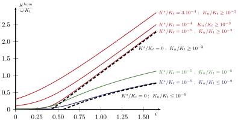
Fig. 5 shows numerical computations of \(K^{hom}/K_t\) with respect to the density \(\epsilon\) for \(\omega=10^{-3}\) and different values of \(K^s/K_t\) and \(K_n/K_t\), thus illustrating the role of the order of magnitude of the latter which has been highlighted in section 3. When \(K^s\) tends towards \(0\), closed-form solutions of \(K^{hom}\) can be found.
If \(K_n\gg \omega^2 K_t\), a percolation threshold is detected for \(\epsilon=27/64\) and, as already found in (Fokker 2001), the permeability beyond the threshold writes:
\[ \wideeq{\frac{K^{hom}}{\omega\,K_t}=\frac{\pi}{108}\, \dep{64\,\epsilon-27}+\grando{\omega} \quad,\quad \epsilon\geq\frac{27}{64}} \tag{58}\]
It is recalled that this percolation threshold \(\epsilon=27/64\approx 0.42\) has been compared in (Fokker 2001) to an estimate \(\epsilon\approx 0.30\) (i.e. a fracture volume fraction \(f\approx 1.27\omega\)) coming from numerical computations on networks of randomly placed ellipsoids provided by (Garboczi et al. 1995), showing that the self-consistent scheme overestimates the threshold in \(3D\).
If \(K_n\ll \omega^2 K_t\), the percolation threshold is reached for a larger value namely \(\epsilon=9/16\) highlighting the negative effect of a too small value of \(K_n\) compared to the previous case. As already found in (Dormieux and Kondo 2004), the permeability beyond the threshold is inferior to that of (58) and writes:
\[ \wideeq{\frac{K^{hom}}{\omega\,K_t}=\frac{3\,\pi}{4}\, \frac{16\,\epsilon-9}{16\,\epsilon+27}+\grando{\omega} \quad,\quad \epsilon\geq\frac{9}{16}} \tag{59}\]
The irrelevance of the model \(K_n\ll \omega^2 K_t\) can also be deduced from the expression (59). Indeed, let the number of fractures per volume unit \(\mathcal{N}\) and the aperture \(c\) be given and let the radius \(a\) increase so as to examine its influence on \(K^{hom}\). Recalling that \(\epsilon={\mathcal{N}}a^3\) and \(K_t=c^2/3\), it comes from (59) that \(K^{hom}\) varies as \(1/a\) when \(a\) is large, meaning that the fracture length would have a negative effect on the permeability, which is unrealistic. This, once again, shows that a small value of \(K_n\) makes the fractures play the unexpected role of obstacles in their transverse direction.
\(2D\) case The same computation can be done on a \(2D\) fractured medium. The geometry is invariant along \(\ve{3}\) and isotropic in the \((\ve{1},\ve{2})\) plane i.e. \(K^{hom}\) is transversely isotropic:
\[ \wideeq{\uu{K}^{hom}=K^{hom}_{\paral}\,\dep{\ve{1}\otimes\ve{1} +\ve{2}\otimes\ve{2}}+K^{hom}_\perp\,\ve{3}\otimes\ve{3}} \tag{60}\]
The fractures are modeled as flat cylinders of elliptic section. As regards the permeability, one can equivalently consider a random distribution of orientation or two orthogonal orientations. Following the procedure described in section 2.2 in the limit case of a largest axis tending towards infinity, the Hill tensor related to a cylinder of elliptic section (same aspect ratio \(\omega\) for all the families) embedded in a transversely isotropic medium with the same axis is:
\[ \wideeq{\uu{P}_{hom}^i=\frac{1}{K^{hom}_{\paral}}\, \dep{\frac{\omega}{1+\omega}\,\uv{m}_i\otimes\uv{m}_i+ \frac{1}{1+\omega}\,\n_i\otimes\n_i }} \tag{61}\]
where \(\n_i\) denotes the normal vector i.e. the small axis direction and \(\uv{m}_i\) the direction orthogonal to \(\n_i\) in the \((\ve{1},\ve{2})\) plane i.e. the large axis direction. It is worth noting that the expression (61) is also found in (Fokker 2001) in the framework of a complete \(2D\) resolution based on the \(2D\) Green function. The isotropy in the \((\ve{1},\ve{2})\) plane leads to the following expression of \(\uu{P}_{hom}^s\)
\[ \wideeq{\uu{P}_{hom}^s=\frac{1}{2\,K^{hom}_{\paral}}\,\dep{\ve{1}\otimes\ve{1} +\ve{2}\otimes\ve{2}}} \tag{62}\]
If \(f\) denotes the total fracture volume fraction, the fracture density \(\epsilon\) in the \(2D\) framework is such that \(f=\pi\,\epsilon\,\omega\). By projection of (37) on \(\ve{3}\), \(K^{hom}_\perp\) is found, as expected, as an arithmetic average:
\[ \wideeq{K^{hom}_\perp=\dep{1-\pi\,\epsilon\,\omega}\,K^s+ \pi\,\epsilon\,\omega\,K_t} \tag{63}\]
where the \(K^s\) term disappears for an impermeable matrix. The solution in the \((\ve{1},\ve{2})\) plane is shown on Fig. 6 for \(\omega=10^{-3}\) for different values of \(K^s/K_t\) and \(K_n/K_t\).
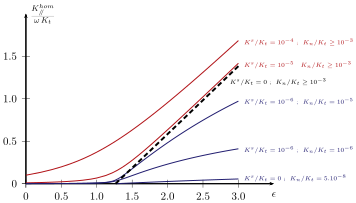
Moreover, a closed-form solution is available in the case of an impermeable matrix and \(K_n\gg \omega^2 K_t\):
\[ \wideeq{\frac{K^{hom}_{\paral}}{\omega\,K_t}=\frac{\pi}{4}\,\epsilon-1 +\grando{\omega} \quad,\quad \epsilon\geq\frac{4}{\pi}} \tag{64}\]
This percolation threshold \(\epsilon=4/\pi\approx 1.27\) can be compared to the value \(\epsilon\approx 1.4\) obtained from numerical computations by several authors for the same problem of draining fractures in an impermeable matrix ((Robinson 1983), (Berkowitz 1995), (Bour and Davy 1997)). Unlike the \(3D\) case, the self-consistent scheme underestimates the percolation threshold but gives a better estimate. It can be mentioned that, in the inverted problem of impermeable needle-like slits in a permeable matrix, the self-consistent scheme as well as Maxwell’s method give the same percolation threshold \(\epsilon=4/\pi\) (above which \(K^{hom}_{\paral}=0\)) and even the same function \(K^{hom}_{\paral}(\epsilon)\) which is rather successfully compared to numerical simulations except in the very neighborhood of the threshold (Zimmerman 1996). Whereas a percolation threshold is found here for a large enough value of \(K_n\), the case \(K_n\ll \omega^2 K_t\) does not allow the macroscopic permeability to reach the order of magnitude of \(\omega\,K_t\) i.e. does not exhibit any percolation threshold for a finite value of \(\epsilon\) (see Fig. 6), once more illustrating the effect of \(K_n\).
4.2 Anisotropic distributions of fractures
\(3D\) case The algorithm leading to the solution to (37) is now implemented in the case of an anisotropic \(3D\) network. As shown on Fig. 7, the orientation of a given family with respect to a fixed basis \((\ve{1},\ve{2},\ve{3})\) of \(\R^3\) is determined by three Euler angles : two angles (spherical coordinates \(\theta\) and \(\phi\)) are needed to define the normal orientation \(\n\) and a third angle \(\psi\) (between the major axis and \(\ve{\theta}\) on Fig. 7) allows to define the rotation around \(\n\) of the fracture plane. Three families are considered in this example. The aspect ratio \(\omega_i\) (see Fig. 3) and the tangential permeability are the same for all the families \(\omega=10^{-3}\). The other characteristics are the following:
family \(1\): \(\theta_1=75°\) ; \(\phi_1=0°\) ; \(\psi_1=0°\) ; \(\eta_1=0.5\)
family \(2\): \(\theta_2=90°\) ; \(\phi_2=90°\) ; \(\psi_2=0°\) ; \(\eta_2=1.\)
family \(3\): \(\theta_3=90°\) ; \(\phi_3=45°\) ; \(\psi_3=45°\) ; \(\eta_3=0.5\)
The three family orientations and shapes are represented on Fig. 8.
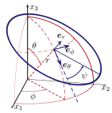
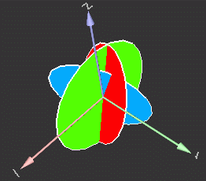
In addition, the three fracture volume fractions are assumed to be equal i.e. one third of the total micro-fracture volume fraction. The effective permeability of such a fractured medium is computed for different values of the latter (from \(0\) to \(6\)‰). Moreover, the same computations are carried out in the presence of a family cross-cutting the r.v.e. of normal \(\ve{3}\) (horizontal plane) and of fixed volume fraction \(1\)‰. According to the conclusions of section 3, the normal permeability of the cross-cutting family is zero whereas the tangential permeability is chosen of the same order of magnitude as that of the micro-fractures. In both cases (with or without the family of long fractures), the eigenvalues of \(\uu{K}^{hom}\) are plotted against the total fracture volume fraction on Fig. 9.
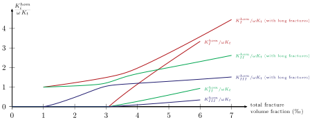
As regards the case without the family of long fractures, a percolation threshold is detected as expected. Beyond a fracture volume fraction of about \(3.1\)‰, the three eigenvalues of \(\uu{K}^{hom}\) reach the order of magnitude of \(\omega\,K_t\) and the principal directions remain constant. It is worth precising that the direction related to the highest permeability is characterized by the angles \(\theta=9°\) and \(\phi=174°\), which is close to the vertical axis \(\ve{3}\). In the presence of the cross-cutting family, the percolation threshold disappears and three phases can be observed on Fig. 9:
\(f<3\)‰ The permeability is essentially controlled by the long fractures i.e. the directions related to the two highest permeabilities are close to the direction of the plane \((\ve{1},\ve{2})\) but the micro-fractures play nevertheless a role. Indeed, in the orthogonal direction, the permeability starts to increase as soon as the micro-fracture volume fraction increases. This result can be somehow justified by the fact that even few micro-fractures create a connection between the cross-cutting planes because the spacing between these ones is of the same order of magnitude as the length of the micro-fractures.
\(3\)‰\(\leq f \leq 4\)‰ This phase is a transition during which the effects of the crossing fractures and those of the micro-fractures are of the same order of magnitude. The computations also show a progressive change of orientation of the principal directions. In particular, the direction related to the highest permeability initially in the horizontal plane rotates and tends towards the major direction of the case without cross-cutting fractures.
\(f>4\)‰ The permeabilities linearly increase with the fracture volume fraction. Due to the density of the micro-fractures, the effect of the cross-cutting family gets slightly attenuated. Nevertheless, it has still to be considered within the abscisse range of Fig. 9 for the two lowest permeabilites. Indeed, the associated directions are close to the horizontal plane in which the cross-cutting family still plays a role for \(f<7\)‰.
\(2D\) case : comparisons with computations on explicit discrete fracture networks The same methodology can be used in the \(2D\) case for which we consider for example two families of micro-fractures (modeled as flat cylinders of elliptic section). The angle between the orientations is \(45°\) and the lengths, the aspect ratio and the densities are identical. The permeability is computed for several values of the total density and compared to numerical simulations on explicit discrete fracture networks by means of the software FRACA developed by IFP. Among many functionalities aiming at analyzing the characteristics of fractured reservoirs, this software allows to randomly generate fractures according to length, orientation and conductivity laws and compute an effective permeability according to the methodology presented in (Bourbiaux et al. 1998), (Sarda et al. 2001), (Lange et al. 2002) and (Bourbiaux et al. 2002). In the present case, the length, orientation and conductivity laws are deterministic. The number of generated fractures is computed with respect to each required density while the length remains constant and the fracture centers are randomly chosen on a square (see Fig. 10). In FRACA, the fractures are considered as an infinitesimal space between rectangles, the aspect ratio being therefore defined as the ratio between the aperture and the length. In order to ensure a relevant comparison between the upscaling model (elliptic profile of the fractures) and the numerical simulation (rectangular profile), the length of the rectangular profile, expected to have a straightforward influence on the percolation threshold, is equal to the major diameter of the corresponding ellipse. Besides, the aperture is such that both areas are identical, which means that the aspect ratio of the rectangle profile over the aspect ratio of the corresponding ellipse is equal to \(\pi/4\).
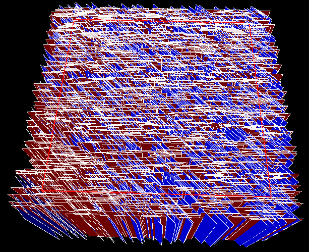
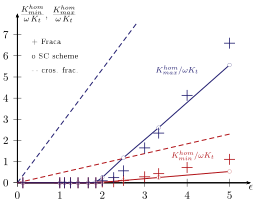
The two principal permeabilites provided by the effective medium theory (the computations are quasi-instantaneous on a 2.8 GHz PC) and the numerical simulations (each cross requires tens of seconds) are plotted on Fig. 11. It appears that both methods give approximately the same value of percolation threshold (about \(\epsilon=1.85\)). Nevertheless, the effective medium theory provides a linear evolution of \(\uu{K}^{hom}\) beyond the threshold, which is not expected from the percolation theory (Sahimi 1995) and the numerical computations here. For higher densities (about twice the threshold value), the theory underestimates the minimal principal permeability computed from the explicit network but both methods give concordant estimates of the maximal permeabilities in the chosen density range (not much than three times the threshold). However, for much higher densities (\(\epsilon\gg 1\)), the spacing between fractures (2) becomes very small compared to the length if the latter remains constant i.e. the increase of density is only due to an increase of the fracture number. In that case, the fractures should not be considered as micro-fractures but long ones with respect to a lower scale r.v.e.. Moreover, one can show on the numerical computations of Fig. 11, that the slopes of the permeabilities tend towards those corresponding to a network of cross-cutting fractures recalling that \(\uu{K}^{hom}\) is then analytically obtained by the second term of (37).
Conclusion
The computation of the macroscopic permeability of a fractured medium is not an easy task. Indeed, natural networks may show spatial correlations preventing the definition of a r.v.e. on which effective properties could be determined. Nevertheless, in the case of a random fractured medium such that a r.v.e. exists, an estimate of the macroscopic permeability is derived in this paper. Two kinds of fractures have been considered : fractures cross-cutting the r.v.e. and micro-fractures. The determination of the macroscopic permeability of such a medium with several families has been proposed by means of the self-consistent scheme. The application of the latter relies first on the substitution of the fractures by equivalent Darcy media with a tangential permeability deduced from the solution of a Poiseuille flow between two planes and an undefined normal permeability. An important step of this scheme consists in computing the second-order Hill tensor. The algorithm leading to the expression of this tensor has been provided for any anisotropic reference medium and any ellipsoidal inclusion. Implementing then the self-consistent scheme, it has been shown that the relevance of the fictitious normal permeability depends on the fracture type: for fractures cross-cutting the r.v.e., any value can be taken whereas for micro-fractures, the same value as the tangential permeability may be chosen not to artificially prevent connections between fractures. Results have finally been provided in the \(2D\) and \(3D\) isotropic and anisotropic cases. The effective permeability of a \(2D\) anisotropic network has been compared to numerical simulations with a good agreement. The need to take carefully into account the characteristic length of each fracture family has also been put in evidence, being understood that all the phases taking part to a given upscling process have all their characteristic length of the same order of magnitude. If the density is of the order of \(1\) or less, the characteristic length is the fracture length and the family is considered as a micro-fracture family whereas if the density is large, the characteristic length is the spacing and the family is cross-cutting the r.v.e..
Acknowledgements
The author gratefully acknowledges fruitful discussions with Jean-Marc Daniel, Marie-Christine Cacas and Martin Guiton (IFP).
5 Hill tensor in the 3D anisotropic case
This paragraph aims at providing the expression of the Hill tensor \(\uu{P}_o^{\mathcal{I}}\) related to an ellipsoid \(\mathcal{I}\) of any shape characterised by the second-order tensor \(\uu{H}\) (16) embedded in an infinite medium of any anisotropic permeability \(\uu{K}^o\). Let us first introduce the Green function \(G^o\) for the reference permeability \(\uu{K}^o\) i.e. the function satisfying:
\[ \wideeq{\Divx{\x}{\dep{\uu{K}^o\prodc\gradux{\x}{G^o}}} =\dirac{\uv{0}} \quad\textrm{and}\quad \lim_{\norm{\x}\to\infty}G^o\depx=0} \tag{65}\]
where \(\dirac{\uv{0}}\) denotes the Dirac distribution at point \(\uv{0}\) of \(\R^3\). It can be shown that the Hill tensor \(\uu{P}_o^{\mathcal{I}}\) can write by means of \(G^o\) (Dormieux et al. 2006):
\[ \wideeq{\uu{P}_o^{\mathcal{I}}\depx= \hessx{\x}{ \int_{\mathcal{I}}G^o\dep{\x-\x'}\,\ud{\Omega_{x'}}} =\dep{\derivexy{}{x_i}{x_j} \int_{\mathcal{I}}G^o\dep{\x-\x'}\,\ud{\Omega_{x'}}} \, \ve{i}\otimes\ve{j}} \tag{66}\]
where the integration is performed with respect to the variable \(\x'\) whereas the differentiations concern the variable \(\x\). It will be shown in the following that \(\uu{P}_o^{\mathcal{I}}\depx\) is uniform over the ellipsoid \(\mathcal{I}\), which constitutes the transposition of Eshelby’s fundamental result (Eshelby 1957) to the second-order tensor problem class. The determination of \(\uu{P}_o^{\mathcal{I}}\) (66) requires to solve (65). To this end, it is first convenient to simplify (65) by introducing the orthogonal tensor \(\uu{Q}\) diagonalizing \(\uu{K}^o\)
\[ \wideeq{\trans{\uu{Q}}\prodc\uu{Q}=\idd \quad\textrm{and}\quad \trans{\uu{Q}}\prodc\uu{K}^o\prodc\uu{Q}=\uu{D}= \sum_{j=1}^3 K^o_{j}\,\ve{j}\otimes\ve{j}} \tag{67}\]
the following tensors
\[ \wideeq{\uu{D}^{1/2}= \sum_{j=1}^3 \sqrt{K^o_{j}}\,\ve{j}\otimes\ve{j} \quad\textrm{and}\quad \uu{R}=\uu{Q}\prodc\uu{D}^{1/2}} \tag{68}\]
as well as the new variable of \(\R^3\)
\[ \wideeq{\y=\inv{\uu{R}}\prodc\x =\uu{D}^{-1/2} \prodc\trans{\uu{Q}}\prodc\x =\dep{\sum_{j=1}^3 \frac{1}{\sqrt{K^o_{j}}}\,\ve{j}\otimes\ve{j}} \prodc\trans{\uu{Q}}\prodc\x} \tag{69}\]
where the obvious notation \(\uu{D}^{-1/2}=\inv{\dep{\uu{D}^{1/2}}}\) has been used. Using the change of variable (69), the left hand side of the first equation of (65) writes:
\[ \wideeq{\begin{aligned} \Divx{\x}{\dep{\uu{K}^o\prodc\gradux{\x}{G^o}}} &=&\uu{K}^o:\hessx{\x}{G^o}\\ &=& \dep{\uu{D}^{-1/2} \prodc\trans{\uu{Q}} \prodc\uu{K}^o\prodc \uu{Q}\prodc\uu{D}^{-1/2}} :\hessx{\y}{G^o}\\ &=& \idd:\hessx{\y}{G^o}\\ &=& \Delta_{\y} G^o \end{aligned}} \tag{70}\]
In addition, a classical result of the theory of distributions allows the same change of variable on the right hand side:
\[ \wideeq{\dirac{\uv{0}}\depx=\dirac{\uv{0}}\dep{\uu{R}\prodc\y}= \frac{1}{\det{\uu{R}}}\,\dirac{\uv{0}}\dep{\y}= \frac{1}{\sqrt{\det{\uu{K}^o}}}\,\dirac{\uv{0}}\dep{\y}} \tag{71}\]
Finally, the first equation of (65) write:
\[ \wideeq{\Delta_{\y} G^o= \frac{1}{\sqrt{\det{\uu{K}^o}}}\,\dirac{\uv{0}}\dep{\y}} \tag{72}\]
The solution of (72) satisfying the remote condition (65) is known:
\[ \wideeq{G^o\dep{\x=\uu{R}\prodc\y}= -\frac{1}{4\,\pi\,\sqrt{\det{\uu{K}^o}}\,\norm{\y}} =-\frac{1}{4\,\pi\,\sqrt{\det{\uu{K}^o}}\, \sqrt{\x\prodc\inv{\uu{K}^o}\prodc\x}}} \tag{73}\]
Introducing (73) in (66), it comes:
\[ \wideeq{\uu{P}_o^{\mathcal{I}}\depx=-\frac{1}{4\,\pi\,\sqrt{\det{\uu{K}^o}}}\, \hessx{\x}{ \int_{\mathcal{I}}\frac{1} {\sqrt{\dep{\x-\x'}\prodc\inv{\uu{K}^o}\prodc\dep{\x-\x'}}} \,\ud{\Omega_{x'}}}} \tag{74}\]
or, with \(\x=\uu{R}\prodc\y\) and \(\x'=\uu{R}\prodc\y'\):
\[ \wideeq{\uu{P}_o^{\mathcal{I}}\dep{\x=\uu{R}\prodc\y}= -\frac{1}{4\,\pi}\, \trans{\inv{\uu{R}}}\prodc \dep{ \hessx{\y}{ \int_{\mathcal{J}}\frac{1} {\norm{\y-\y'}} \,\ud{\Omega_{y'}}}} \prodc\inv{\uu{R}}} \tag{75}\]
where the integration is performed over the ellipsoid \(\mathcal{J}\) of equation:
\[ \wideeq{\y\in{\mathcal{J}}\Leftrightarrow \y\prodc\inv{\dep{\trans{\uu{H}'}\prodc\uu{H}'}}\prodc\y\leq 1 \quad\textrm{with}\quad \uu{H}'=\uu{H}\prodc\trans{\inv{\uu{R}}} =\uu{H}\prodc\uu{Q}\prodc\uu{D}^{-1/2}} \tag{76}\]
The classical newtonian potential is recognized in (75):
\[ \wideeq{\Phi\dep{\y}=\frac{1}{4\,\pi}\,\int_{\mathcal{J}}\frac{1} {\norm{\y-\y'}} \,\ud{\Omega_{y'}} \quad\Rightarrow\quad \uu{P}_o^{\mathcal{I}}\dep{\x=\uu{R}\prodc\y}= -\,\trans{\inv{\uu{R}}}\prodc \hessx{\y}{\Phi\dep{\y}} \prodc\inv{\uu{R}}} \tag{77}\]
The potential \(\Phi\) can simply be expressed by means of the eigenvectors and eigenvalues of the characteristic tensor \(\trans{\uu{H}'}\prodc\uu{H}'\) of \(\mathcal{J}\). Let us then introduce the orthogonal tensor \(\uu{S}\) such that:
\[ \wideeq{\trans{\uu{S}}\prodc\uu{S}=\idd \quad\textrm{and}\quad \trans{\uu{S}}\prodc\trans{\uu{H}'}\prodc\uu{H}'\prodc\uu{S}= A^2\,\ve{1}\otimes\ve{1}+ B^2\,\ve{2}\otimes\ve{2}+ C^2\,\ve{3}\otimes\ve{3} \quad(A\geq B\geq C)} \tag{78}\]
Using these notations, it can be shown that the potential (77) is a quadratic form of \(\y\) for \(\y\in{\mathcal{J}}\) i.e. \(\x\in{\mathcal{I}}\) ((Kellogg 1929), (Eshelby 1957)):
\[ \wideeq{\forall\y\in{\mathcal{J}},\quad \Phi\dep{\y}=\frac{1}{2}\,\dep{A^2\,I_A+B^2\,I_B+C^2\,I_C} -\frac{1}{2}\,\y\prodc\uu{S}\prodc\uu{\Delta}_I\prodc\trans{\uu{S}}\prodc\y} \tag{79}\]
where \(\uu{\Delta}_I\), \(I_A\), \(I_B\) and \(I_C\) are defined with respect to \(A\), \(B\) and \(C\) in (20)-(29). Finally, the homogeneity of \(\uu{P}_o^{\mathcal{I}}\) within \(\mathcal{I}\) is proved by introducing (79) in (77):
\[ \wideeq{\uu{P}_o^{\mathcal{I}}= \trans{\inv{\uu{R}}}\prodc \uu{S}\prodc\uu{\Delta}_I\prodc\trans{\uu{S}} \prodc\inv{\uu{R}}} \tag{80}\]
References
Footnotes
A permutation between the eigenvectors is possibly used so as to respect this order.↩︎